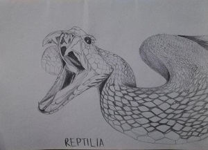

I went to pre-school instead of kindergarten at the age of 5 years old, together with my twin. The pre-school that I went to are under the same school my brother and sisters went, so that is why my parent send me there. When the pre-school is over, my late-father will come and pick the two of us (my twin and me). I still remember one time where the students of grade 6 had school trip, conjoint with the pre-school kid. My twin and me also join the trip and went to the zoo and shopping mall. At that time, my brother also there because he was in the grade 6.
Then, I went to the elementary school in 2007. Living my life as elementary students for six years and graduate by taking UPSR exam. I got 4As and choose to get in high school near my house, SMK Matang, because I cannot bear parting with my family. In the year of 2015, I took PT3 and got 10As. The last big exam that I took as high school students are the SPM, and I got 5As and apply for UPU. That was how I arrive in UiTM Kedah.
However, what I really want to share is about the knowledge that I just learn few months ago. Many people are scared of snakes and crocodiles as they are dangerous reptile that must be killed on the spot. But, if you learn more about them, you will know about their charactersand might less scared of them and be more cautious; for example, some snakes are just too lazy to attack people, so they will pretend the human are not there until the human try to mess up with them. Here, I want to share the basic education of the reptiles, that is the family of the snakes and crocodiles. Not all snakes have poisons and venom, and not all crococodiles are big.
 |
||
| SNAKE | FAMILY | NAME |
|---|---|---|
| Viper |
|
|
| Boa |
|
|
| Python |
|
|
| CROCODILIAN | FAMILY | NAME |
| Alligatoridae | Paleosuchus palpebrosus (Cuvier's Dwarf Caiman) |
|
| Crocodylidae | Tomistoma schlegelii (False Gharial) |
|
| Gavialidae | Gavialis gangeticus (Indian Ghavial) |
|